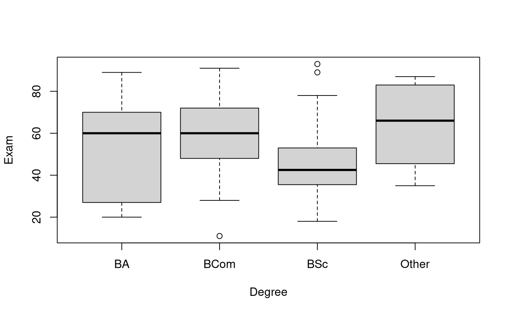
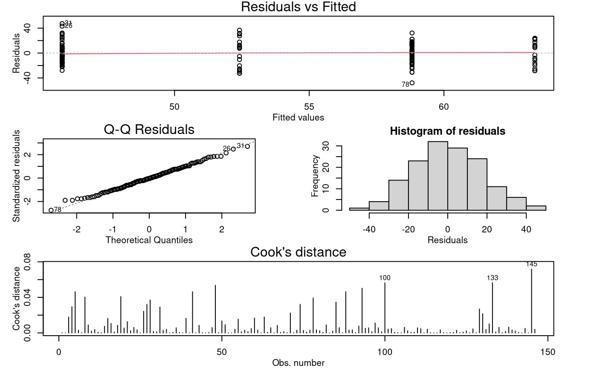

Problem
We want to quantify the expected final exam mark (out of 100) in Stats 20x for each type of degree. In particular, we want to investigate whether there is a “degree” effect on the final exam mark.
The variables of interest were:
-
Exam: A student’s exam mark out of 100. -
Degree: A four-level factor with levels corresponding to a student’s degree.- “BA”, “BCom”, “BSc”, and “Other”.
Read in and Inspect the Data
load(system.file("extdata", "Stats20x.df.rda", package = "s20x"))
Stats20x.df = read.table("STATS20x.txt", header = TRUE)
Stats20x.df$Degree = factor(Stats20x.df$Degree)
# Draw boxplot
plot(Exam ~ Degree, data = Stats20x.df)
# Summary stats:
summaryStats(Exam ~ Degree, Stats20x.df)## Sample Size Mean Median Std Dev Midspread
## BA 17 52.41176 60.0 24.57402 43.00
## BCom 49 58.81633 60.0 16.23868 24.00
## BSc 64 45.82812 42.5 15.80090 17.25
## Other 16 63.37500 66.0 19.76824 35.75The “BSc” group is centred noticeably lower than the others. The standard deviations are within a factor of two from smallest to largest, so we can accept the equality of variance assumption. (The midspreads do exceed the factor-of-two rule-of-thumb, so we might need to be cautious in our interpretations.)
Model Building and Check Assumptions
degree.fit = lm(Exam ~ Degree, data = Stats20x.df)
modelcheck(degree.fit)
anova(degree.fit)## Analysis of Variance Table
##
## Response: Exam
## Df Sum Sq Mean Sq F value Pr(>F)
## Degree 3 6675 2225.15 7.1958 0.0001568 ***
## Residuals 142 43910 309.23
## ---
## Signif. codes: 0 '***' 0.001 '**' 0.01 '*' 0.05 '.' 0.1 ' ' 1
summary(degree.fit)##
## Call:
## lm(formula = Exam ~ Degree, data = Stats20x.df)
##
## Residuals:
## Min 1Q Median 3Q Max
## -47.816 -12.456 -0.816 12.487 47.172
##
## Coefficients:
## Estimate Std. Error t value Pr(>|t|)
## (Intercept) 52.412 4.265 12.289 <2e-16 ***
## DegreeBCom 6.405 4.950 1.294 0.1978
## DegreeBSc -6.584 4.798 -1.372 0.1722
## DegreeOther 10.963 6.125 1.790 0.0756 .
## ---
## Signif. codes: 0 '***' 0.001 '**' 0.01 '*' 0.05 '.' 0.1 ' ' 1
##
## Residual standard error: 17.58 on 142 degrees of freedom
## Multiple R-squared: 0.132, Adjusted R-squared: 0.1136
## F-statistic: 7.196 on 3 and 142 DF, p-value: 0.0001568Multiple Comparisons Output
## contrast estimate SE df lower.CL upper.CL t.ratio p.value
## BA - BCom -6.41 4.95 142 -19.27 6.46 -1.294 0.5683
## BA - BSc 6.58 4.80 142 -5.89 19.06 1.372 0.5189
## BA - Other -10.96 6.12 142 -26.89 4.96 -1.790 0.2825
## BCom - BSc 12.99 3.34 142 4.31 21.67 3.891 0.0009
## BCom - Other -4.56 5.06 142 -17.72 8.61 -0.900 0.8047
## BSc - Other -17.55 4.92 142 -30.32 -4.77 -3.570 0.0027
##
## Confidence level used: 0.95
## Conf-level adjustment: tukey method for comparing a family of 4 estimates
## P value adjustment: tukey method for comparing a family of 4 estimatesMethods and Assumption Checks
We wish to explain exam marks using degree, a factor with four levels, so we fitted a One-way ANOVA model to these data.
The model assumptions seem satisfied.
Our final model is where is 1 if a student is enrolled in degree and 0 otherwise (with ), and .
Alternatively, our final model could be written as where is the overall mean exam mark and is the effect of being in the th degree (with ), and .
Our model explained 13.2% of the variability in students’ exam marks.
Executive Summary
Is the degree a student is enrolled in related to their final 20x exam mark?
We do have evidence that expected exam marks were not identical between the four degree groups (Ba, BCom, BSc, and Other). However, the only significant differences we found were that BSc students had lower marks than BCom and Other degree students.
With 95% confidence we can say that:
- on average, “BSc” students do worse than “BCom” students by between 4 and 22 marks.
- on average, “BSc” students do worse than “Other” students by between 5 and 30 marks.